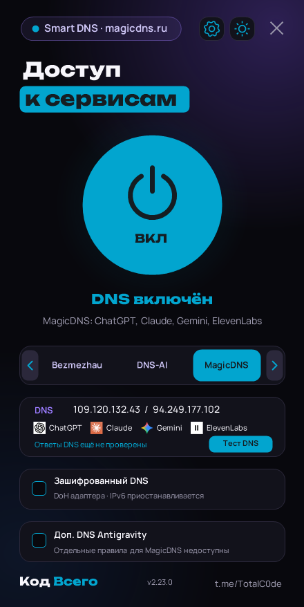

Windows · Android · открытый код
Код Всего
Smart DNS
Выбор DNS-провайдера, зашифрованный DNS и проверка ответов сервера.
Доступ к сервисам зависит от выбранного оператора. Ответ DNS не гарантирует работу сайта или модели.
github.com/Kam300/KodVsego-SmartDNS